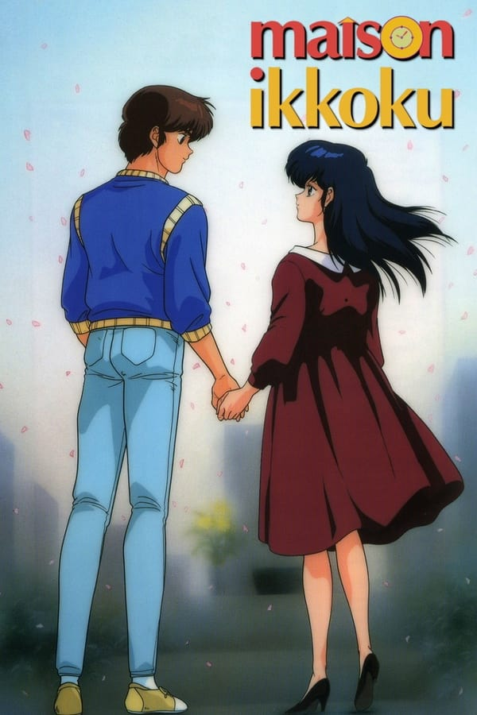
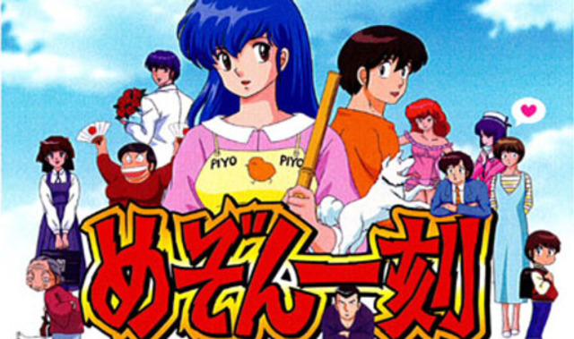

Maison Ikkoku (Japanese: めぞん一刻, Hepburn: Mezon Ikkoku, "Ikkoku House") is a Japanese manga series written and illustrated by Rumiko Takahashi.
It was serialized in Big Comic Spirits from November 1980 to April 1987, with the chapters collected into 15 tankōbon volumes by Shogakukan. Maison Ikkoku is a bitter-sweet romantic comedy involving a group of madcap people who live in a boarding house in 1980s Tokyo. The story focuses primarily on the gradually developing relationships between Yusaku Godai, a poor student down on his luck, and Kyoko Otonashi, a young, recently widowed boarding house manager.
The manga was adapted into a ninety-six-episode anime television series created by Studio Deen that ran on Fuji TV from March 1986 to March 1988. A Final Chapter movie, three OVAs, and a music special were also produced, with a live-action movie made by Toei in 1986. A live-action TV special aired in May 2007 on TV Asahi, with a finale aired in July 2008. Both the manga and anime have been released in North America by Viz Media. Maison Ikkoku has been both critically and commercially successful, with over 25 million copies in circulation.
